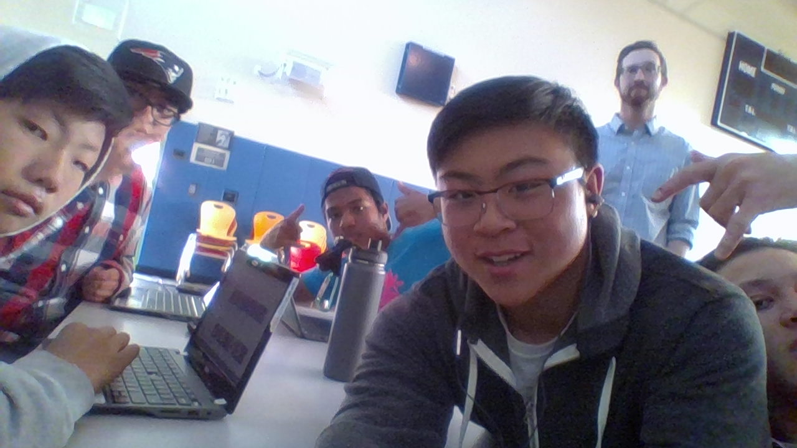

One thing I learned is how to work with the people around me. Throughout the project my tablemates were very distracting, this brought on many difficulties but I learned how to focus on my own project. Another thing I learned was how to code in JS, I found out how to animate and create different shapes. This is something that will help me in the future because not only can I code in the basics of Javascript, but I can also focus a lot better than I could before the project.
